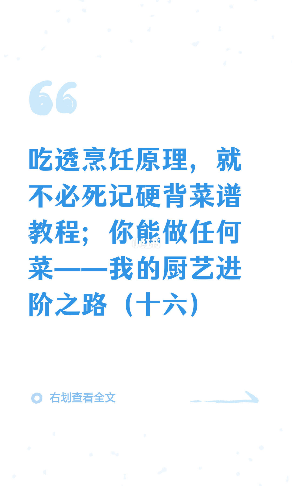
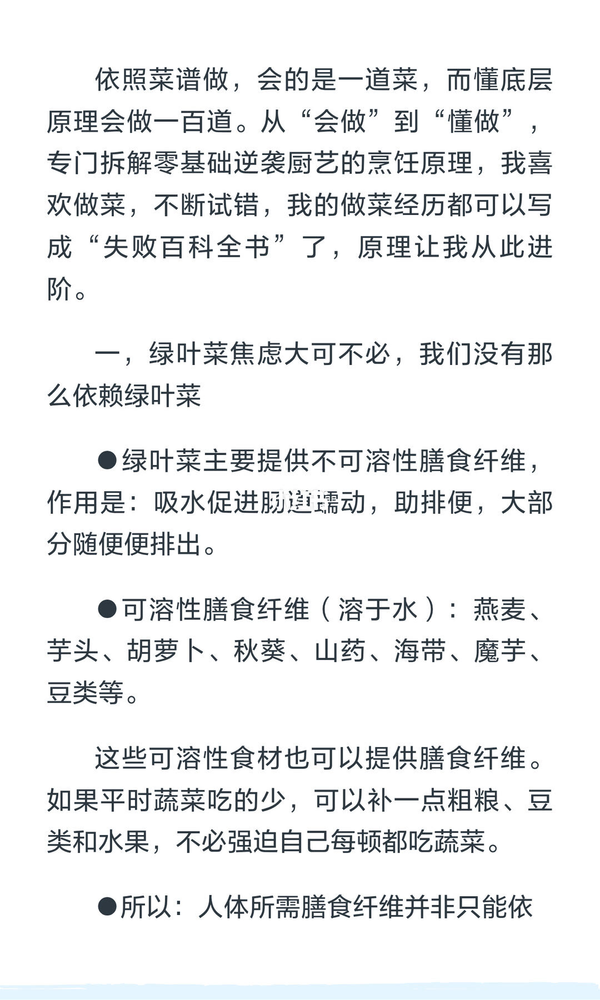
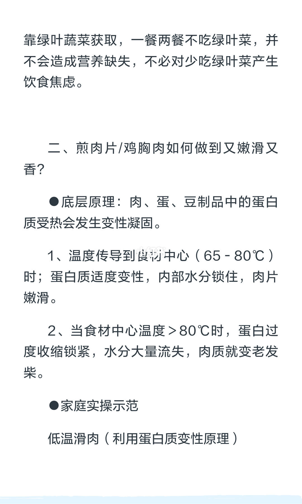
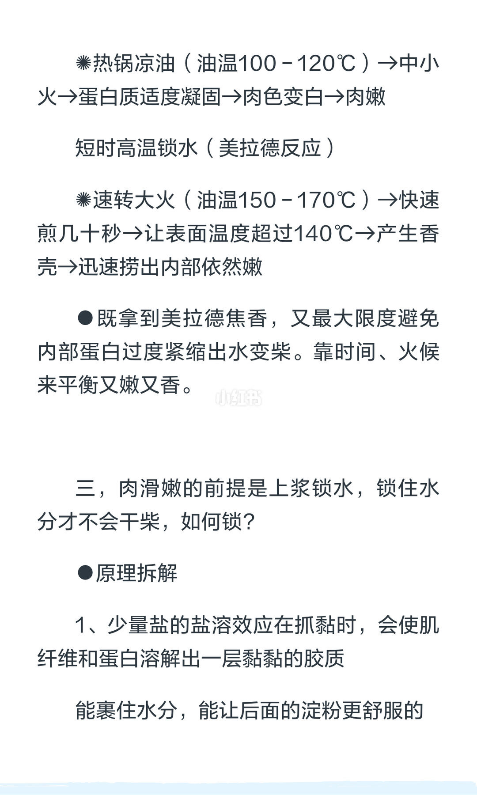
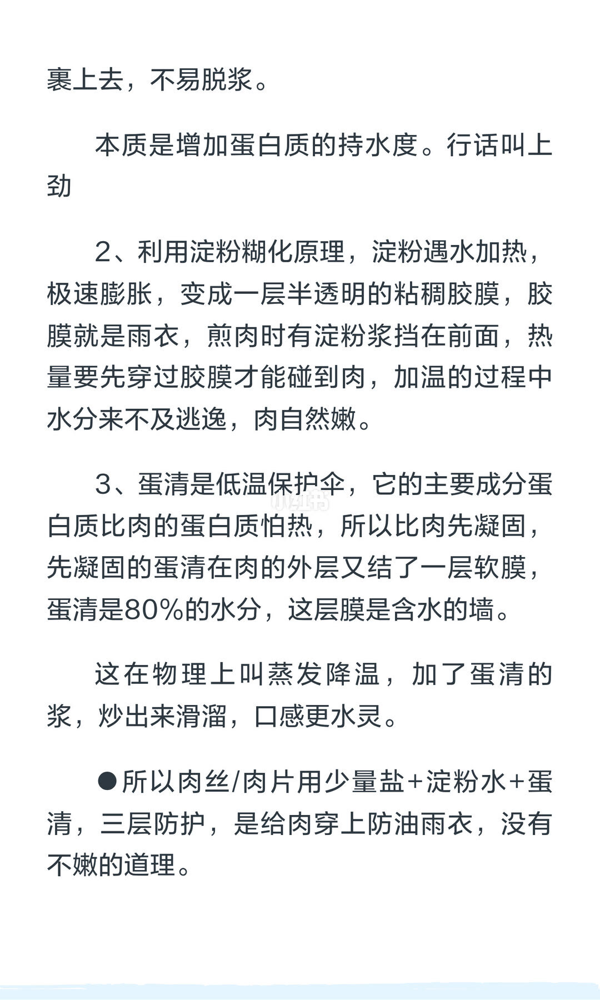
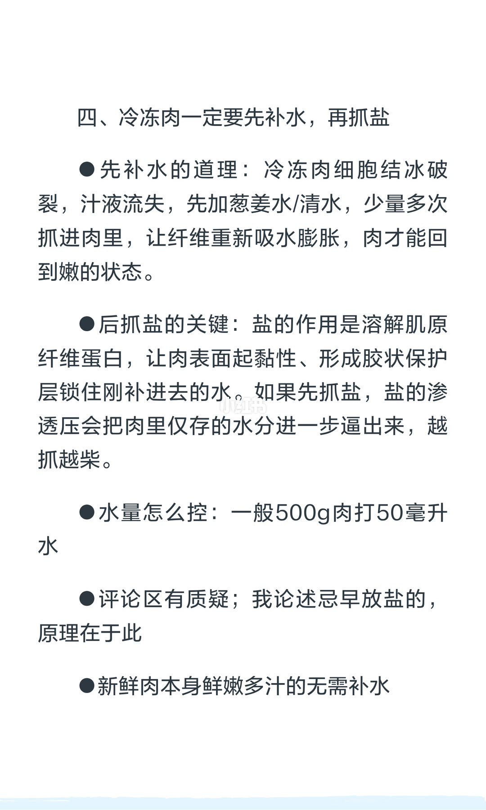
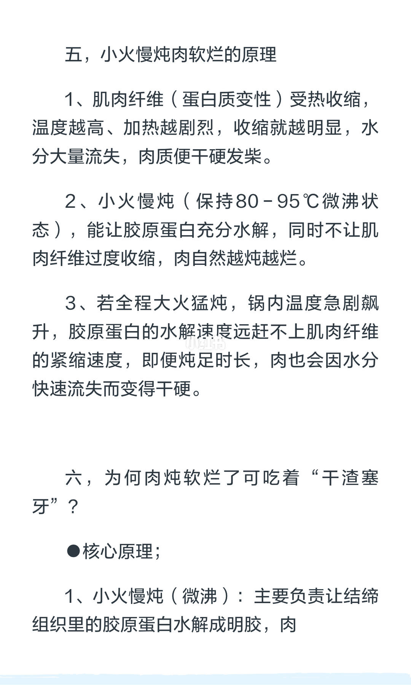
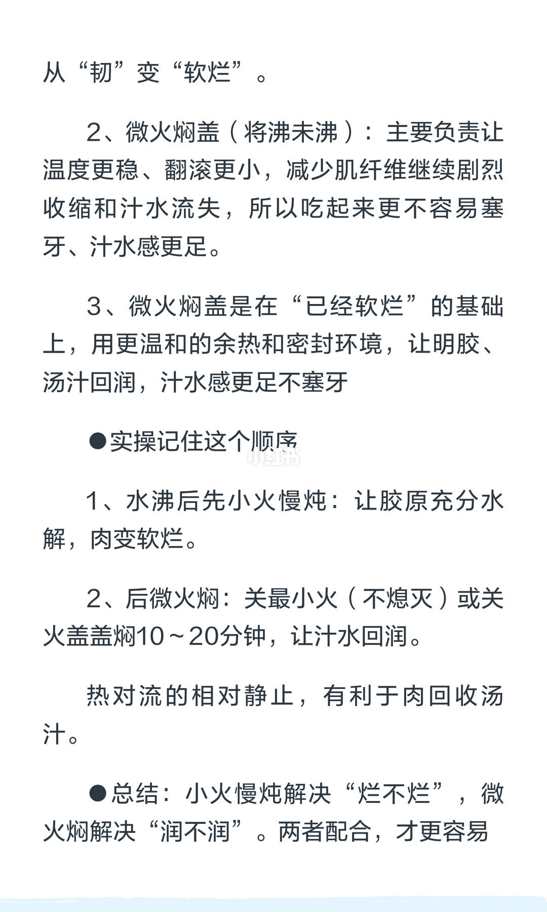
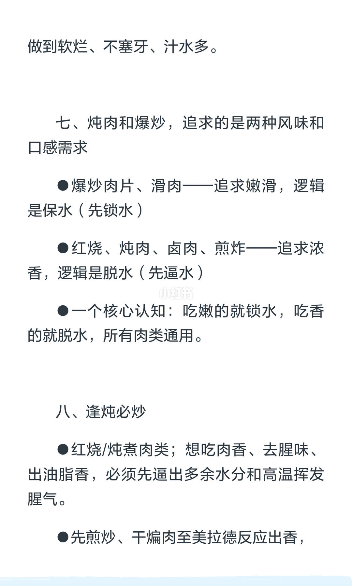
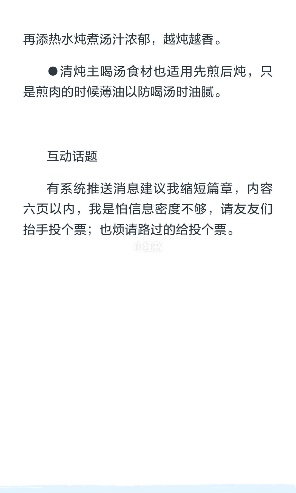

第 1 页：封面

1/10封面：吃透原理不必死记菜谱——厨艺进阶之路（十六）。
Cover: principles over rote recipes—culinary path (16).
右划看全文；本篇聚焦肉类保嫩与炖软。
第 2 页：绿叶菜焦虑

2/10绿叶菜焦虑大可不必：不可溶纤维促蠕动；燕麦豆类海带等可溶纤维可补，不必每顿强迫吃菜。
Fiber isn’t only leafy greens—oats, beans, kelp etc. also count.
从「会做一道」到「懂做一百道」。
第 3 页：蛋白变性窗口

3/10煎肉片鸡胸：中心65–80℃蛋白适度变性锁水嫩滑；>80℃过度收缩出水发柴。
Keep center 65–80°C for tenderness; hotter squeezes water out.
低温滑肉吃的就是这个窗口。
第 4 页：短时高温锁香

4/10热锅凉油中小火至变白，再短时大火150–170℃起香壳；上浆锁水是滑嫩前提。
Gentle set then brief high heat for crust; slurry locks water first.
盐溶出黏胶，方便淀粉附着。
第 5 页：上浆三层保护

5/10少盐+淀粉糊化膜+蛋清先凝固膜：三层「雨衣」隔热阻水逃逸，滑溜更润。
Salt + starch gel film + egg-white shield = three-layer moisture raincoat.
蒸发冷却让口感更「滑」。
第 6 页：冻肉补水后抓盐

6/10冻肉先补水再抓盐：冰晶破细胞先喂水膨胀；先盐会渗透逼水越抓越柴。约500g肉50ml水。
Frozen meat: rehydrate first, salt later—early salt osmosis toughens.
鲜肉多汁通常无需补水。
第 7 页：小火慢炖原理

7/10小火慢炖80–95℃微沸：胶原水解、肌纤维不过度收缩；全程猛火则紧缩快于水解，越炖越柴。
Simmer 80–95°C: collagen → gelatin without over-shrinking fibers.
软烂与干渣塞牙是下一问。
第 8 页：微火焖回汁

8/10软烂后微火焖盖（将沸未沸）让明胶汤汁回吸；小火解决烂不烂，微火焖解决润不润。
After tender, covered barely-simmer reabsorbs juices—tender ≠ moist.
顺序：沸后小火炖 → 再焖10–20分钟。
第 9 页：锁水 vs 脱水

9/10爆炒滑肉追求锁水嫩；红烧炖卤煎炸追求脱水浓香。逢炖必炒：先逼水走美拉德再加水炖。
Tender = lock water; fragrant braise = dehydrate first—always sear before stew.
吃嫩锁水，吃香脱水，肉类通用。
第 10 页：先煎后炖与互动

10/10先煎后炖汤更浓香；清炖可薄油防腻。作者征求是否缩短篇幅的投票。
Sear then stew for aroma; clear soups use thin oil; author asks length-feedback vote.
原理篇信息密度高，互动收尾。
文末汇总
核心判断：嫩靠蛋白窗口与上浆锁水；香靠短时美拉德或先脱水；炖软靠小火胶原水解，润靠微火回汁；冻肉补水后于盐。
- 冻肉：水→盐→浆
- 炖肉：大火开→小火烂→微火润
- 先问这道菜要嫩还是要香
以上为原笔记图文观点整理，不是对该主题的全面定论。